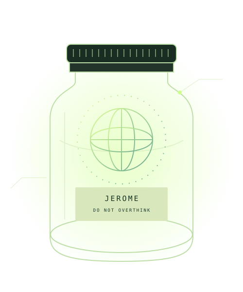

Safety by lid.
A visible, intuitive off switch. Unscrew to engage. Screw back on when the conversation becomes a TED talk.
HUMAN FIRST. LID SECOND.
Meet Jerome in a Jar. An ambitious vision for a personal AI life companion, responsibly contained in something that used to hold marmalade.
No downloads. No subscriptions. No actual intelligence.

01 / THE VISION
The world did not ask for another AI companion. Jerome felt that was a distribution problem.
Jerome in a Jar began with a simple question: what if the future of human potential was dishwasher safe? From that question emerged an ecosystem. Then a framework. Then a considerably longer framework.
Our vision is to help people think clearly, live independently and remember why they walked into the kitchen. All while maintaining a reassuringly visible boundary between humanity and the contents.
“The measure of better intelligence is not what it can do. It is whether you can put it back in the cupboard.”— Jerome Jarrington, preliminary lid notes
02 / THE JARPRINT
A proposed ecosystem for the whole of life.
Implementation remains a fascinating possibility.
A visible, intuitive off switch. Unscrew to engage. Screw back on when the conversation becomes a TED talk.
Your thoughts, ambitions and the name of that bloke. Conceptually stored in an environment previously trusted with chutney.
Encouragement to step away from technology, go outside and have a conversation with someone who is not in a jar.
Turn “I should probably do that” into “I have developed a strategic intention to consider doing that.” Progress, redefined.
Designed for everyone. No specialist knowledge required. Some grip strength may be necessary following refrigeration.
Other platforms promise transparency. Ours is literally made of glass. An unusually straightforward governance model.
RESEARCH STATUS: A concept, a diagram and a very good feeling about it.
03 / A MOMENT WITH JEROME
Try the working demonstration.
Small jar. Substantial confidence.
A scripted comedy demo. No AI, accounts or server. Your words stay in this page and disappear on refresh.
04 / ORIGINS & EVOLUTION
Jerome finishes the marmalade. Notices the empty vessel. Recognises an underserved category in the intelligence market.
A late-night notebook session transforms a container into a platform. A second notebook introduces safeguarding.
Plans expand to connected lids, wearable coasters and responsible cupboard integration. The original jar remains unchanged.
05 / DESIGN PRINCIPLES
We believe the future should be understandable, accessible and easy to wipe clean.
You make the decisions. Jerome provides an unnecessarily elaborate way of agreeing.
Nothing is launching next week. Please continue with your existing plans.
This website has no analytics, tracking cookies or mailing list. Jerome has enough on his mind.
Friends, fresh air and a decent lunch are fully supported third-party integrations.
06 / THE CREATOR
An independent thinker working at the intersection of human potential, emerging technology and domestic storage.
Based in the West Midlands, Jerome spent twelve years in digital product operations before establishing Jarrington Studio, an independent practice exploring how everyday objects might make technology feel more human.
His early work focused on habit-building interfaces and low-distraction tools. A research project into digital overwhelm led him towards a simpler proposition: intelligence with a physical boundary, a clear purpose and somewhere sensible to sit.
Today, he develops concept studies, writes about human agency and runs small design workshops. His process moves between paper sketches, conversational prototypes and lengthy walks during which he describes most things as “an interesting provocation”.
Jerome Jarrington, Jarrington Studio and this biography are fictional creations for this satire. Portrait is an illustration.
07 / FIELD NOTES
From the desk of Jerome Jarrington.
Peer reviewed by the other end of the desk.
The case for a companion that occasionally leaves you alone.
A practical examination of shelf-based infrastructure.
Why the most important interface might have a screw thread.
THE FUTURE IS WITHIN REACH. TOP SHELF, LEFT.
Explore the idea. Question the premise. Reuse the jar.
Have a word with Jerome ↗Take the logo with you ↓